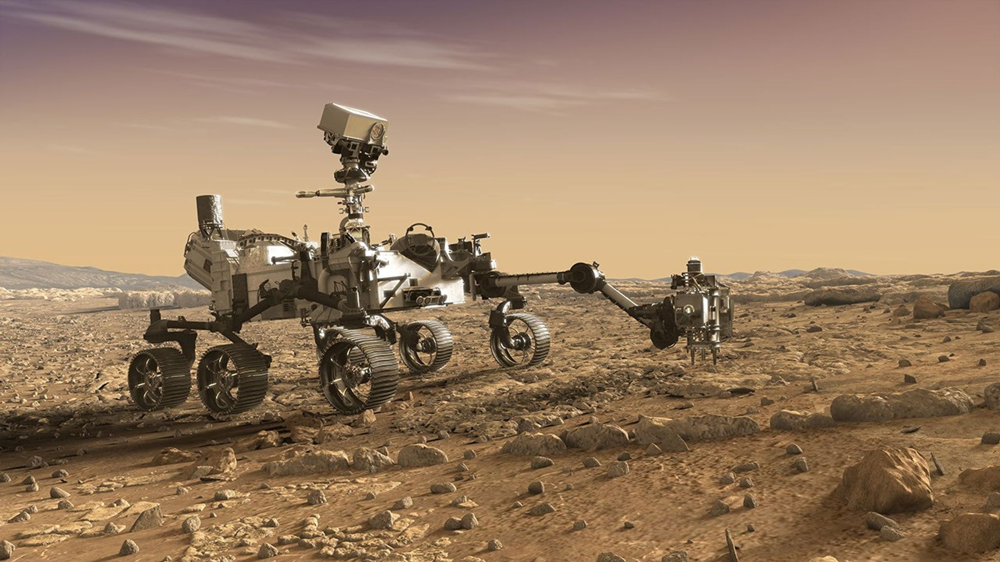

Its home
Jezero Crater, Mars
An ancient lake-and-river landscapeThe Little Explorer
of Mars
Beyond the Book — An Interactive Mars Adventure
Meet a real rover exploring an ancient world. Look closer at its tools, discoveries, and the big questions it is helping us ask.
Begin the adventureROVER STATUS: EXPLORING MARS
Perseverance is a NASA rover exploring Jezero Crater, a place where rivers once flowed into a lake. It landed on Mars on February 18, 2021.
Its job is to study rocks, past environments, and climate—and to collect carefully chosen samples while searching for signs that ancient microbial life might once have existed.
NASA mission overview ↗Jezero Crater, Mars
An ancient lake-and-river landscapeFebruary 18, 2021
After a dramatic “seven minutes of terror”Study, search, sample
Rocks can preserve clues from the pastHealthy and active
Collected rock sample “Singita” · Nov 9, 2026Tap a glowing marker to open a field note. Each tool has a job to do.

assets/images/perseverance-rover-photo.jpg. Hotspots stay hidden until their coordinates are set in script.js.Rovers are like robot geologists. Their tools help them look at rocks, test them, and choose samples worth studying.
Perseverance reads that record one rock, one image, and one sample at a time.
Jezero Crater once held a lake, and a river flowed into it. Layers of rock and sediment preserve clues about those ancient environments.
Explore NASA’s science highlights ↗The rover studies rock textures and chemistry. Minerals formed or changed by water help scientists reconstruct what Mars was like long ago.
See how the instruments work ↗Perseverance drills and seals selected rock samples in tubes. They are stored for possible study by a future mission; they have not yet been returned to Earth.
Read about sample collection ↗The rover is looking for signs that ancient microbial life might have existed. Scientists study possible clues carefully—no discovery of life has been confirmed.
What is a potential biosignature? ↗
Match the rover’s tools, then take the five-question explorer quiz.
Choose what each tool is best at. Match all five for a perfect score.
Five quick questions. How much have you discovered?
You asked great questions and earned your virtual explorer badge!
Read our team’s children’s digital storybook, then come back to explore the real rover and the science behind its mission.
Read the storybook ↗